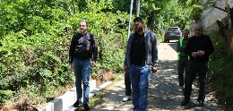

ქედის მუნიციპალიტეტის
keda municipality
eng
მთავარი
ქედის შესახებ
მერია
მერიის შესახებ
სიახლეები
განცხადებები
მერი
მერის მოადგილეები
სამსახურები >
ადმინისტრაცია
საფინანსო სამსახური
ეკონომიკური განვითარების სამსახური
სივრცითი მოწყობის, არქიტექტურისა და მშენებლობის სამსახური
ზედამხედველობის სამსახური
განათლების, კულტურის, სპორტის, ტურიზმის, ახალგაზრდულ საკითხთა და ძეგლთა დაცვის სამსახური
ჯანმრთელობისა და სოციალური დაცვის სამსახური
შიდა აუდიტის სამსახური
სამხედრო აღრიცხვის, გაწვევისა და მობილიზაციის სამსახური
მერის წარმომადგენლები
მუნიციპალური
ორგანიზაციები
სტრუქტურული ხე
მემორანდუმები
აუქციონები
ტენდერები
საკრებულო
მოქალაქისთვის
საჯარო ინფორმაცია
სერვისები
კონტაქტი

სიახლეები
საკრებულო
01.04.24 |
საკრებულო
დღეს, მე-12 კლასის მოსწავლეებისათვის ბოლო ზარი დაირეკა!
01.04.24 |
საკრებულო
ქედის მუნიციპალიტეტში ტრადიციულად სახალხო დღესასწაული ,,ფრიდონობა“ აღინიშნა
01.04.24 |
საკრებულო
ქედის მუნიციპალიტეტის მერის პირველი მოადგილე სოფელ გულებში ინფრასტრუქტურულ სამუშაოებს გაეცნო
01.04.24 |
საკრებულო
დღეს, მე-12 კლასის მოსწავლეებისათვის ბოლო ზარი დაირეკა!
01.04.24 |
საკრებულო
დღეს, მე-12 კლასის მოსწავლეებისათვის ბოლო ზარი დაირეკა!
01.04.24 |
საკრებულო
ქედის მუნიციპალიტეტის მერის პირველი მოადგილე სოფელ გულებში ინფრასტრუქტურულ სამუშაოებს გაეცნო
ყველას ნახვა
მერია
01.04.24 |
მერია
ქედაში ფაშიზმზე გამარჯვების დღე აღინიშნა
01.04.24 |
მერია
ქედის მუნიციპალიტეტში საქართველოსა და ევროკავშირის დროშები განთავსდა
01.04.24 |
მერია
გილოცავთ აღდგომის ბრწყინვალე დღესასწაულს
01.04.24 |
მერია
ქედაში ფაშიზმზე გამარჯვების დღე აღინიშნა
01.04.24 |
მერია
ქედაში ფაშიზმზე გამარჯვების დღე აღინიშნა
ყველას ნახვა
დაუკავშირდი მერიას
დაუკავშირდი საკრებულოს
calendar
ონლაინ გამოკითხვა
შემთხვევითად გენერირებული ტექსტი ეხმარება დიზაინერებს და ტიპოგრაფიული ნაწარმის შემქმნელებს, რეალურთან მაქსიმალურად მიახლოებული
კი
კი
კი
კი
კი
კი
კი
კი
კი
კი
ხმის მიცემა
შედეგების ნახვა